| The CIMA wizard at Arecibo is Mikael Lerner. Mikael is an astronomer by training, and he is constantly improving CIMA, making it smarter, more robust and more user-proof. We try to work with Mikael to use the version that he suggests. Our setup (fixed azimuth drift mode) is so simple that he likes us to test out new versions before they are released publicly. In January 2008, we worked with him to test the major post-painting project upgrade version, so right now (Mar 2008) we are using the unusuable engineering version. | 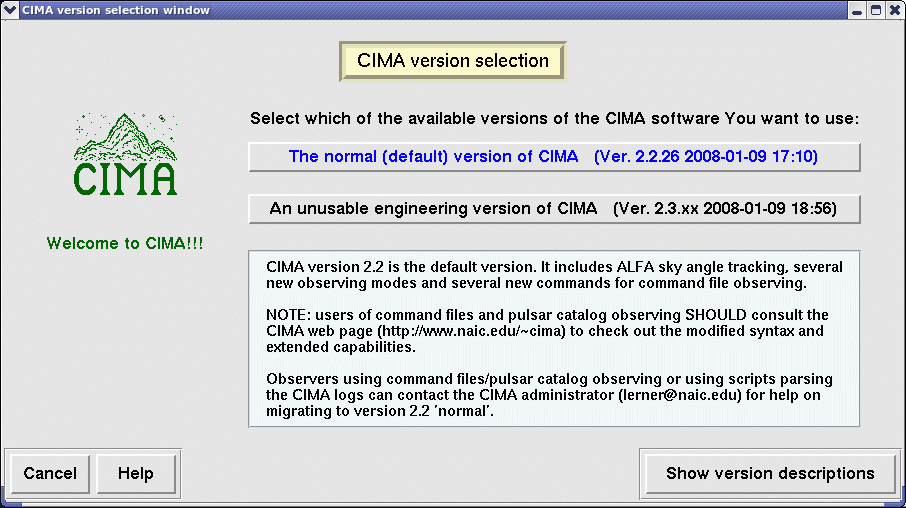 (click for larger version) |
| CIMA widgets allow you to control the observing mode and the setup of the receiver (also called the "frontend") and the spectrometer (also called the "backend"). Parameters can be entered either interactively via the widgets or by loading files which have been setup previously. You get access to the different widgets via the one labeled the "CIMA Main Menu". On this widget, buttons highlighted in black are operative. | 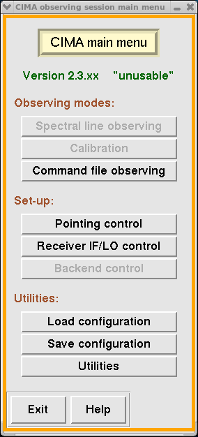 (click for larger version) |
| During your observing session, CIMA checks and records a lot of useful information which is displated in the "CIMA observation log display." Mikael makes use of color here - red refers to serious failures. Watch for those! Orange denotes warnings. Watch for those too, and make a note in the A2010 log if you aren't sure of their significance. | 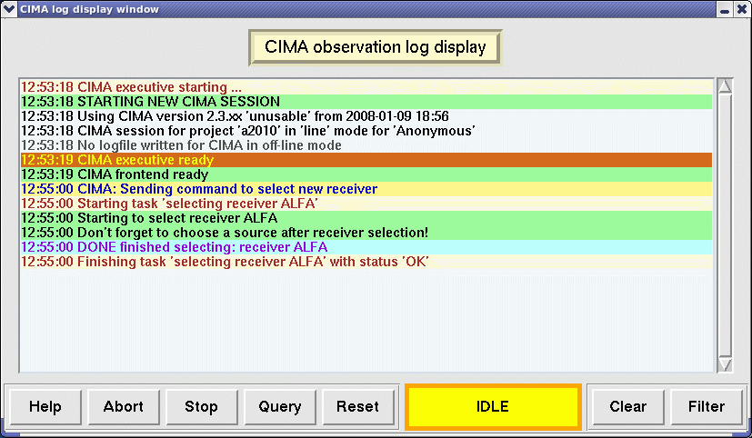 (click for larger version) |
| Arecibo is equipped with different receivers which operate in different frequency bands or have other differences. L-band is technical name for the range of frequencies from 1.0 to 1.8 GHz, (covering the 18 and 21 cm bands). Arecibo has 2 receivers which operate in this band, ALFA, with its 7 beams, and a single beam receiver called LBW, "L-band Wide". It is somewhat more sensitive than ALFA and covers a broader range of frequencies; it is better for targeted observations when you know exactly where you want to look. We of course use ALFA. | 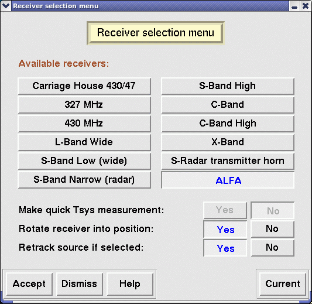 (click for larger version) |
| At Arecibo, a single set of cables is used to bring down the signals from
different receivers up in the dome to the shielded room where the
spectrometers are located. Therefore, we have to "convert" the frequency of the spectrum we want
to study to one which can be fed over the cable to other amplifiers and mixers, without of
course forgetting what we have done. Therefore we make use of the intermediate frequency (or IF)
(the standard one used to transfer the signal down from the platform) which is fixed and a
second, the local oscillator (or LO) which is tunable. By varying the LO frequency, we are then
able to track the changes due to, for example, the rotation of the Earth on its axis and
the revolution of the Earth around the barycenter of the Solar System.
Under normal conditions, when you select a receiver, the IF/LO selections go along with it.
For ALFA, the IF frequency is 260 MHz; can you figure out what the multiplier and LO frequency are?
In order to set up the different receivers, you need to specify these two frequencies so that
the frequency at the center of the band can be expressed in terms of them as: |
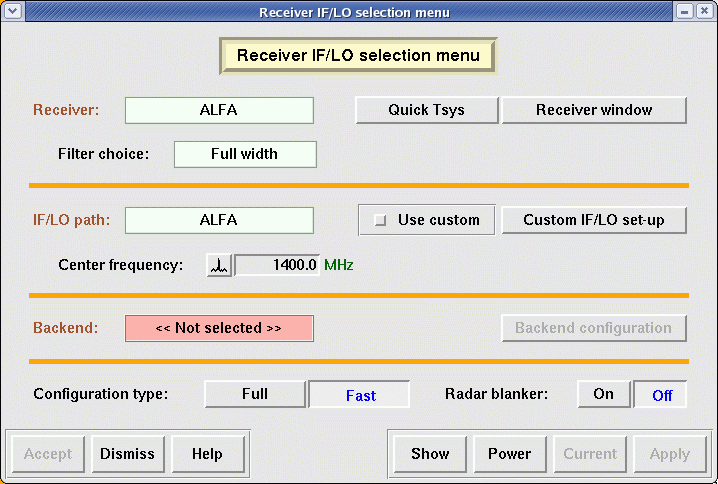 (click for larger version) 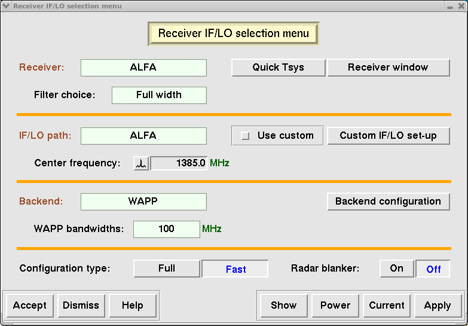 (click for larger version) 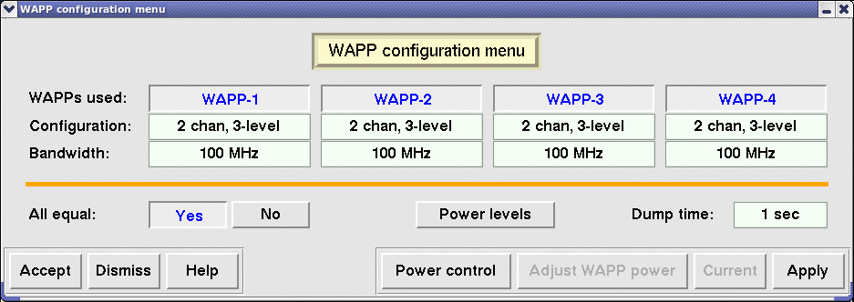 (click for larger version) |
| This little widget allows you to reset preferences, restart programs, or start up the display monitors (see below). | 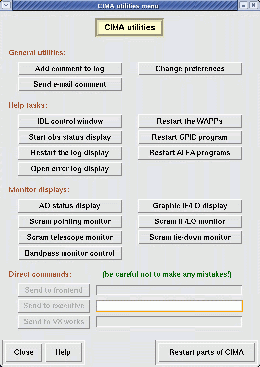 (click for larger version) |
| Once you set up the observing mode, for ALFALFA by loading the configuration file the observing parameters associated with the Fixed azimuth drift map mode should be set. To change the position of the first source, you can access the current A2010 source catalog by locking on Start position in the CIMA observing menu. This 2nd widget will open, allowing you to choose a new source and/or modify parameters. You can see what sources are currently visible by clicking on Show graphically. | 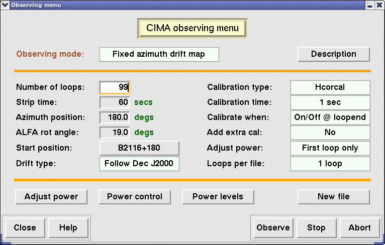 (click for larger version) |
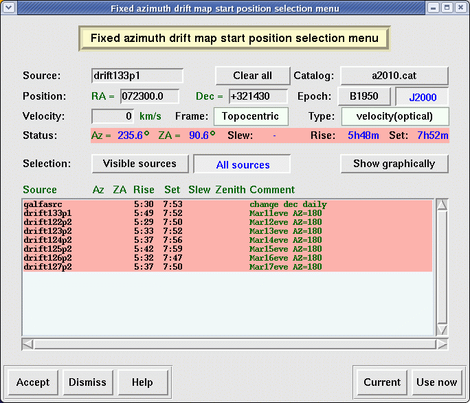 (click for larger version) |
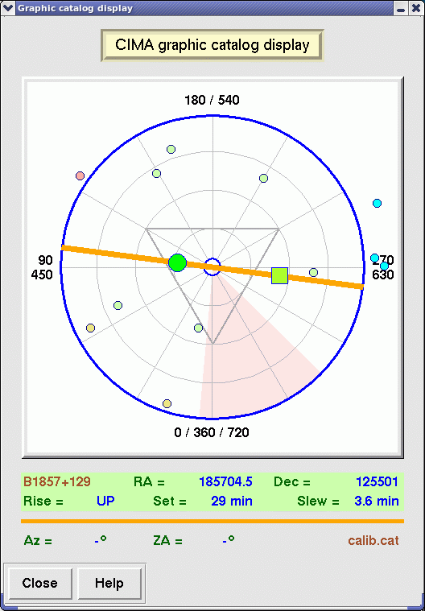 (click for larger version) |
| This little widget lets you keep track of what's going on. | 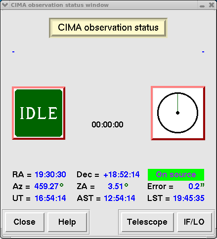 (click for larger version) |
| This little widget lets you keep monitor the position of the telescope. When the display was captured, ALFA wasn't being used. ( we should replace this!) | (click for larger version) |
| This little widget lets you keep monitor the position of ALFA. For ALFALFA's meridian drift scan mode, when the azimuth is either 180o or 360o, a rotation angle of 19o yields beam tracks that are equally spaced in declination. | 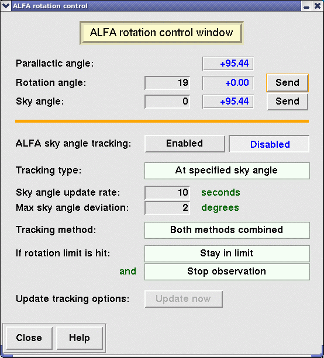 (click for larger version) |
{kind=link}
{kind=link}
{kind=link}
{kind=link}
{kind=link}
{kind=link}
{kind=link}
{kind=link}
{kind=link}
{kind=link}
{kind=link}
{kind=link}
{kind=link}